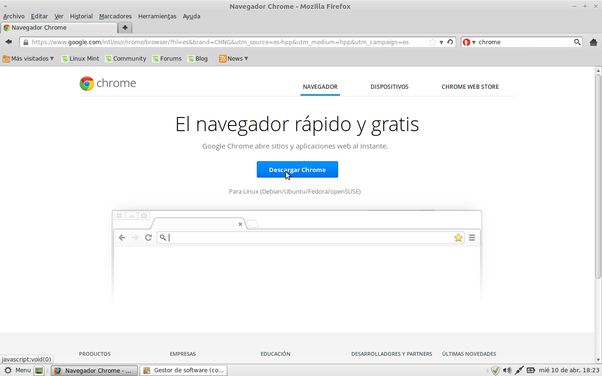
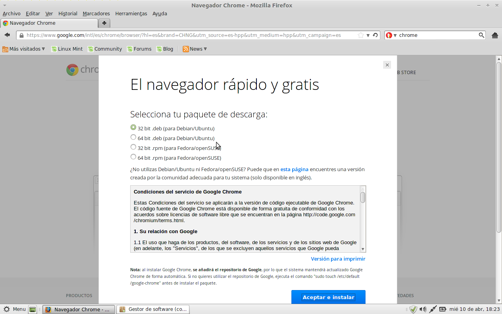
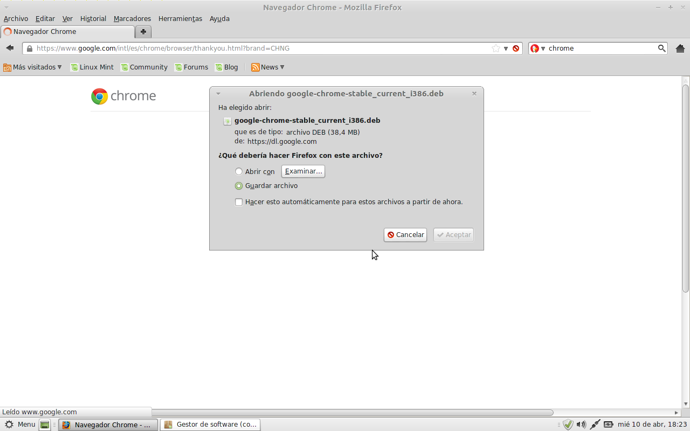
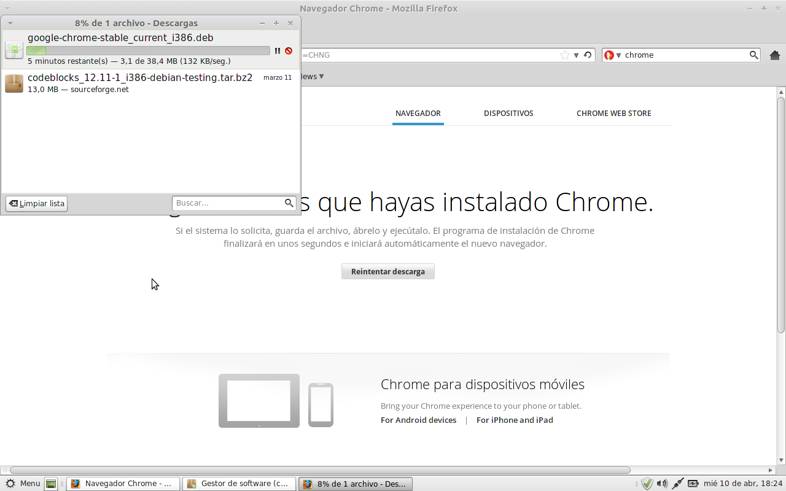
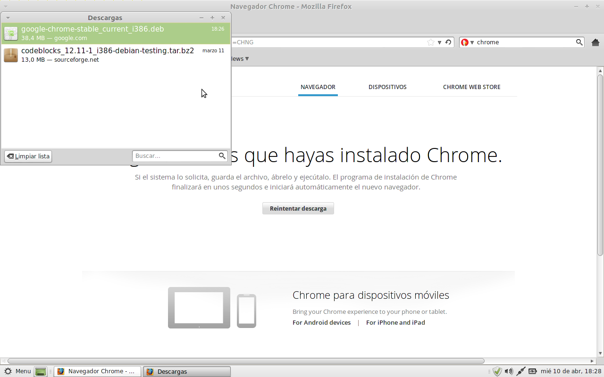
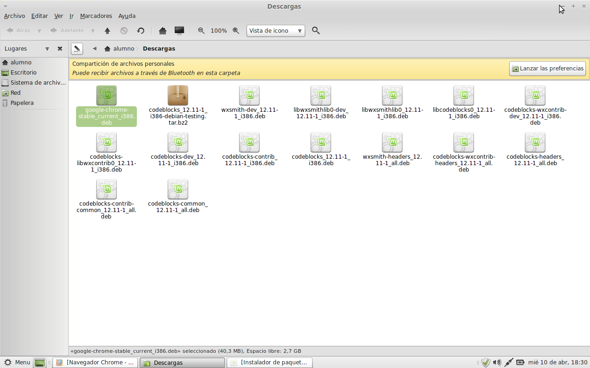
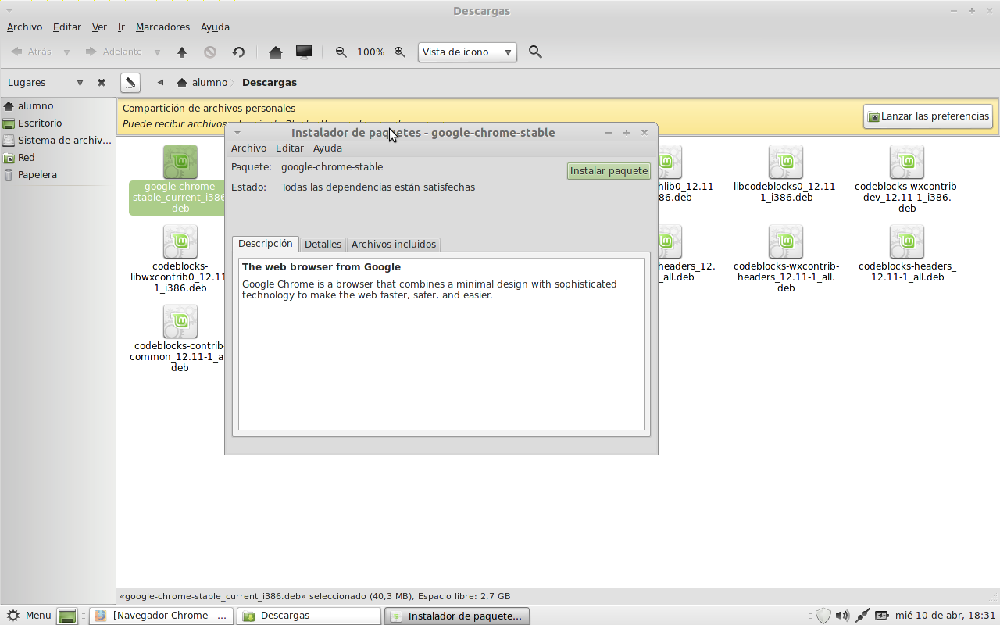
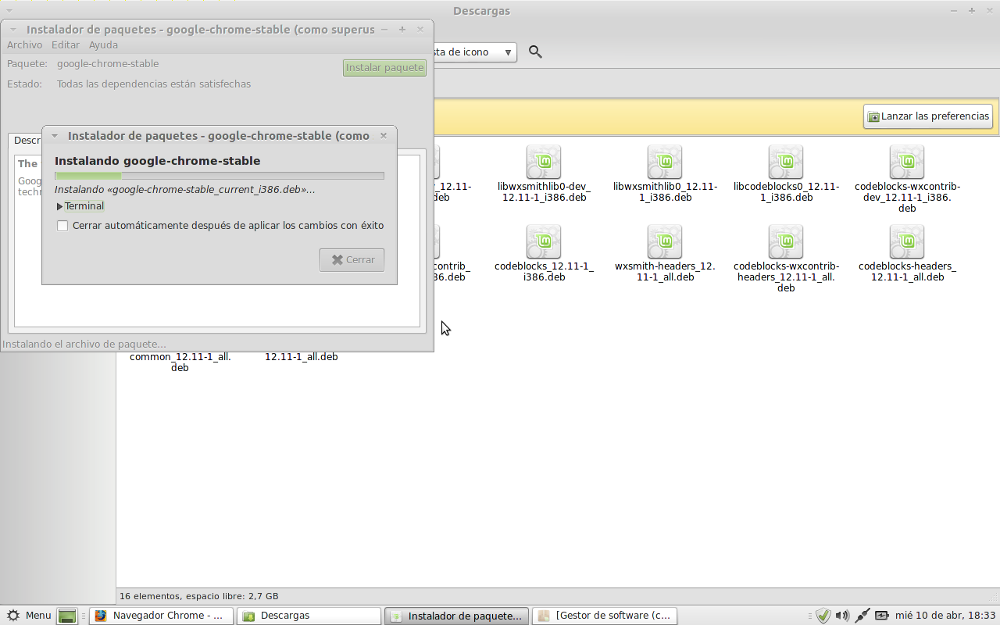
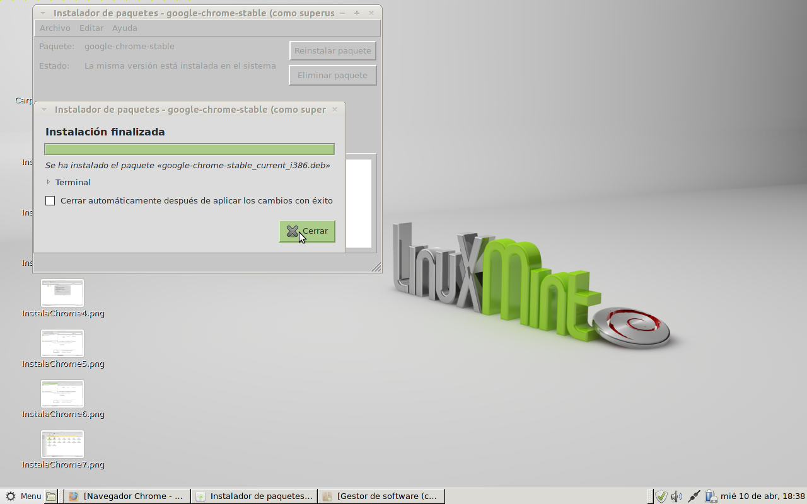

Instala Google Chrome en LMDE
En tan sólo 10 simples pasos podés tener el popular navegador de Google corriendo en tu LMDE.
Instalando Chrome en 10 pasos
- Abrimos el navegador Firefox y vamos al sitio de Google . 
- Hacemos click sobre el anuncio de "Instala Google Chrome".
- Esto nos lleva a una nueva página donde debemos apretar el botón de "Descargar Chrome". 
- Nos aparecerá este cuadro donde debemos seleccionar el paquete correspondiente según la arquitectura que tengamos. Si estamos instalando esto en LMDE elegimos alguno de los paquetes *.deb. Leemos las condiciones del servicio y apretamos sobre el botón "Aceptar e Instalar". 
- Firefox nos pregunta si queremos Abrir el archivo o Guardarlo. Le damos a la opción de Guardar archivo y aceptamos. Inmediatamente comenzará la descarga. 
- Esperamos un ratito, que dependerá de la velocidad de nuestra conexión... 
- Una vez terminada la descarga o hacemos click derecho sobre el google-chrome-stable_current_i386.deb y vamos en el menú desplegable a la opción "Ver carpeta contenedora". Con esto nos abrirá la carpeta de Descargas. 
- Ahí mismo en Descargas, buscamos el archivo recién descargado y hacemos doble click sobre el mismo. 
- Esto nos abrirá el Instalador de paquetes y para instalarlo sólo debemos apretar el botón de "Instalar paquete". 
- Una vez terminada la instalación podemos cerrar las ventanas y dentro del Menú --> Internet --> Google Chrome 
Comentarios
Comments powered by Disqus